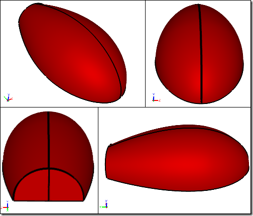
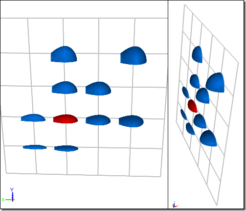
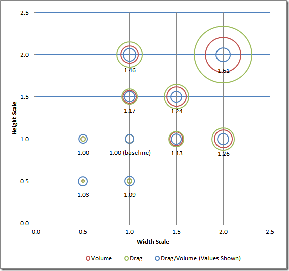

CFD Concept Design of a Fuel-Efficient Passenger Vehicle
To realize the maximum benefit of Computer-Aided Engineering (CAE) simulation tools, such as Computational Fluid Dynamics (CFD), you have to use these analysis tools early in the concept design phase of a project. The concept design phase is the moment when the design is (pardon the pun) fluid - open to extensive geometry changes and free of the clutter of manufacturing details, such as fasteners. This is the time to design for simulation, i.e., keep your geometry simple and perform comparative analysis to explore how design parameters affect the design performance.
 Caedium CFD Results for Baseline GeometryShows velocity magnitude colormap on surfaces, vectors, and streamlines
Caedium CFD Results for Baseline GeometryShows velocity magnitude colormap on surfaces, vectors, and streamlines
Design of a Fuel-Efficient Passenger Vehicle
As an example consider the concept design phase for a fuel-efficient passenger vehicle. No matter what the fuel source you'll want to minimize the drag of the vehicle and that means paying close attention to the external aerodynamics. If the design goal was simply to minimize the drag then that would be easy - just use a flat plate. However, as with most engineering design projects there are multiple constraints and one of the crucial constraints in this example is that it must be able to carry passengers. Therefore, the vehicle has to strike a balance between minimizing drag and providing enough internal volume to accommodate passengers. Clearly the flat plate is a non-starter.
Concept Design Study
So let's start with the ideal form for a low drag vehicle - a half airfoil close to the ground, truncated at the rear (to avoid a sharp point) and rotated 180 degrees to form a volume. Clearly this will not be the final vehicle shape, but it can serve as a concept model to help explore the design space. Design space is this instance means varying key design parameters - scaling height and width while keeping the vehicle length constant - and noting the effect on the drag and volume. In fact you can combine the drag (D) and volume (V) design goals into a single cost function CF = D/V, where smaller values of CF approach the most efficient vehicle in terms of drag per unit volume. By varying the design parameters and evaluating the cost function you can get a sense of the design space in order to make better decisions in subsequent design iterations.
Baseline Geometry
CFD Study
CFD is a cost effective and efficient way to perform comparative studies when trends are important. Starting with a simple quarter airfoil (assuming symmetry) in close proximity to the ground you can quickly define the geometry and create a flow volume ready for our CFD parameter analysis. Using this baseline geometry it is also easy to create multiple variations by scaling the height and width of the vehicle. For each variation you can then run a simulation to calculate the drag force and calculate the internal volume, all normalized against the values calculated for the baseline design.
Shape Variation
CFD Results
After running the simulations (in this case 10 simulations), you can collate the normalized (against the baseline) drag, volume, and cost function values for each variation and plot the results to give a parameter map of the design space.
Design Space Parameter Map: Circle diameters represent values
Conclusions
For this simple example you can see that below the baseline height and width values the cost function is relatively constant. However, above the baseline case parameters you start to see significant increases in the drag per unit volume. This study shows that the baseline is near the optimal lowest drag per unit volume.
However, it may be that there are minimum volume or height design constraints too, which could rule out the baseline's optimal parameters. If that is the case then another insight from this study is that with increasing volume (above the baseline) it is better to favor either uniform scaling or greater width than height scaling.
Final Thoughts
You can now feed these insights into the next iteration of the concept design phase. No doubt the next phase will add more detailed geometry (e.g., wheels) and impose more constraints, and so it continues. This approach to concept design provides a fast and relatively easy way to use early fact-based design directions to reduce costly rework later on in the design process.
Feedback
Questions? Ideas? Problems?